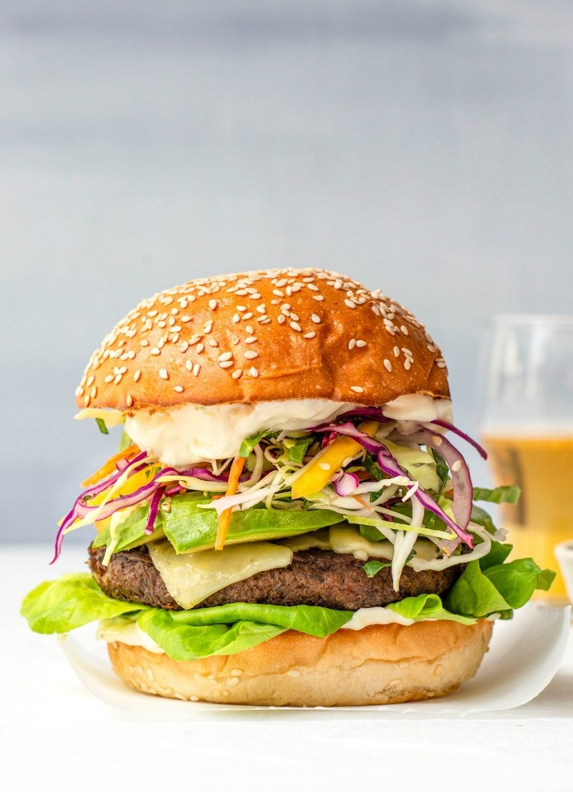

Beef Burger

Beef Burger
Jamaican jerk BBQ beef burger with fresh mango slaw, an amazing dish with every bit of classical and delightful taste
INGREDIENTS
- Slaw
- 1 cup each packed shredded red cabbage and white cabbage.
- 1 carrot, julienned.
- 1 small red onion, very thinly sliced.
- 1 tablespoon fresh lime or lemon juice.
- 1 tablespoon olive oil.
- 1 teaspoon sea salt.
- ½ teaspoon caster sugar.
- 1 ripe, firm mango, peeled and julienned or chopped.
- 1 tablespoon toasted white sesame seeds.
- 2 tablespoons finely chopped mint.
- Mayo.
- ¾ cup good-quality egg mayonnaise.
- finely grated zest 1 lime or lemon.
- 2 cloves garlic, crushed.
- sea salt and ground pepper.
- Burgers.
- 4 x 150-gram Angel Bay Jamaican Jerk BBQ Brisket beef burger patties.
- 1 cup grated cheddar or 4 slices.
- 4 brioche burger buns, halved and toasted.
- good handful soft lettuce leaves.
1 large avocado, thinly sliced.
STEPS(PREPARATION)
- Preheat the grill to its highest setting.
- Slaw: Combine all the ingredients except the mango, sesame seeds and herbs in a large bowl and turn to combine. Gently fold through the mango, sesame seeds and mint.
- Mayo: Stir all the ingredients together and season with salt and pepper.
- Burgers: Cook the burger patties according to the packet instructions. Place the cooked patties on a baking tray and top with the cheese. Place under the grill until the cheese is melting.
- To assemble: Spread both the bases and tops of the brioche buns with the mayo. Layer up the bases with the lettuce, avocado, patties and the mango slaw. Add the tops.